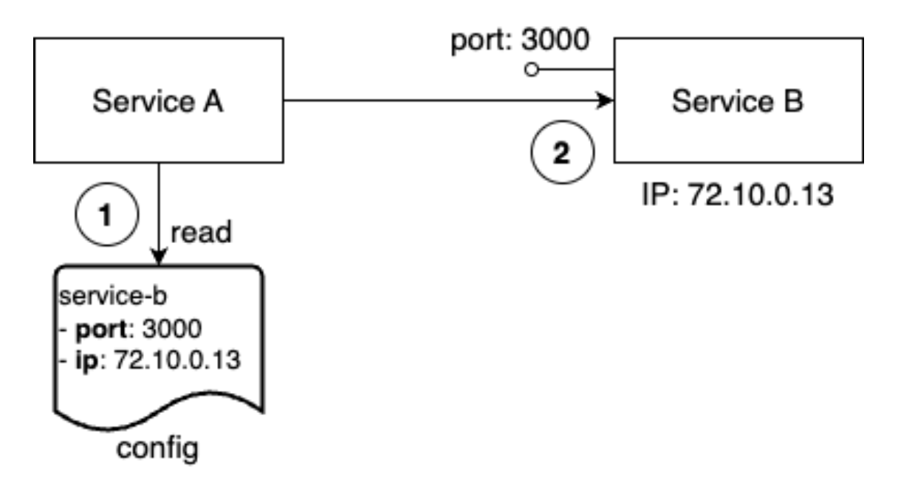
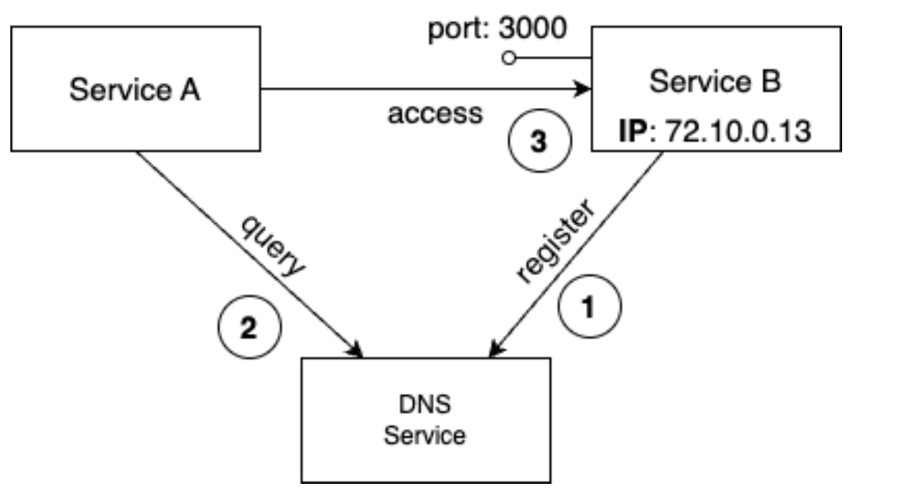
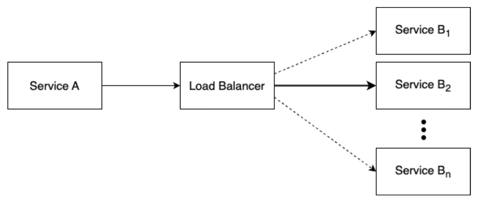
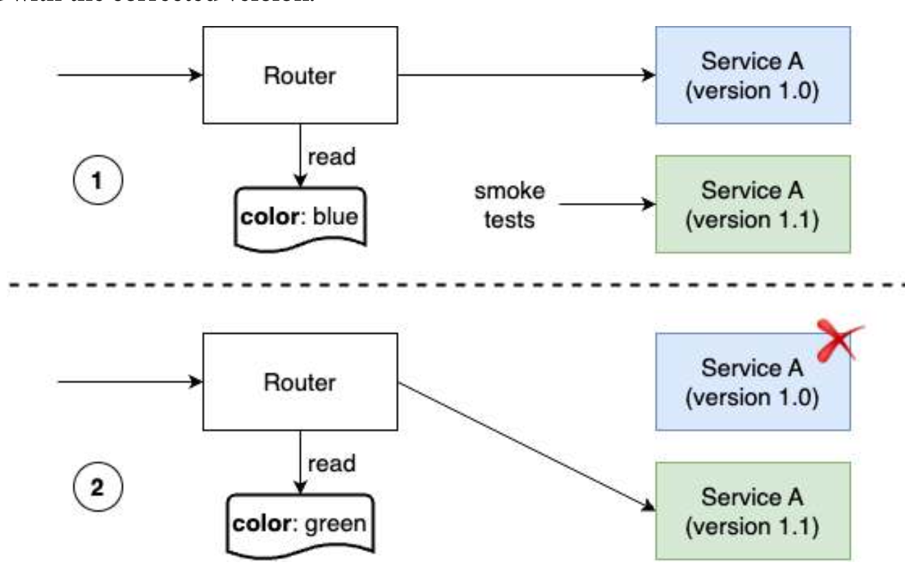
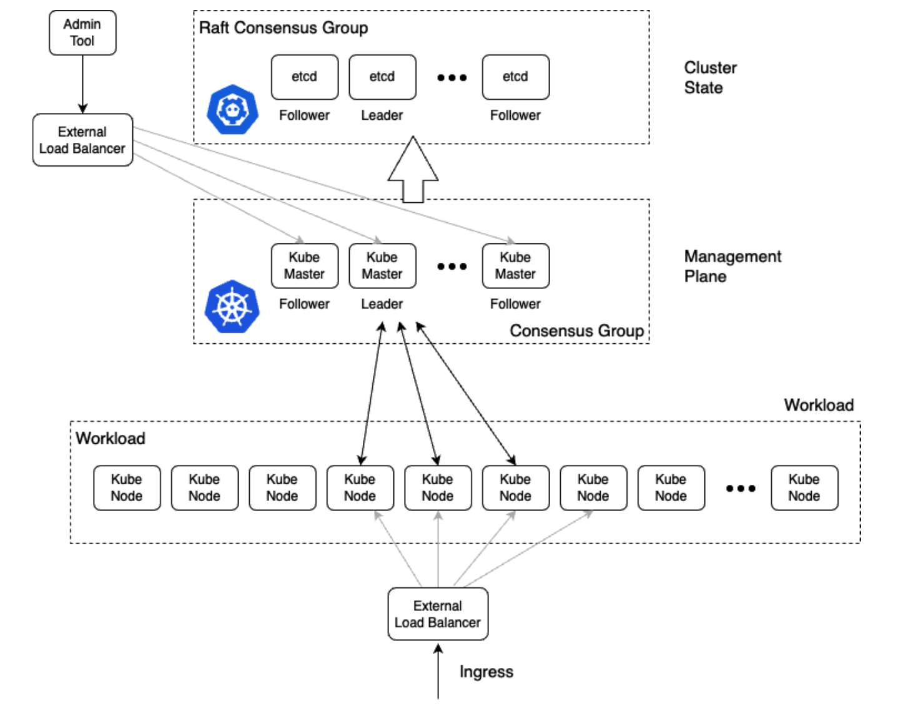
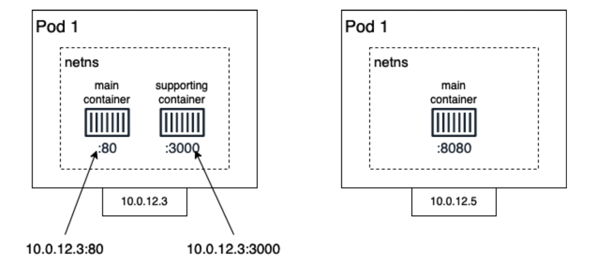

Kubernetes part 1
Lviv University
Distributed intro
Definitions
| Keyword | Description |
|---|---|
| VM | A virtual machine (VM) is a software simulation of a physical computer that runs on a host computer. It provides a separate operating system and resources, allowing multiple operating systems to run on a single physical machine. |
| Cluster | A cluster is a group of connected servers that work together as a single system to provide high availability, scalability, and increased performance for applications. The nodes in a cluster are connected through a network and share resources to provide a unified, highly available solution. |
| Node | A cluster node is a single server within a cluster computing system. It provides computing resources and works together with other nodes to perform tasks as a unified system, providing high availability and scalability for applications. |
Distributed intro
Definitions
| Keyword | Description |
|---|---|
| Network | A network is a group of interconnected devices that can exchange data and information. Networks can be used to connect computers, servers, mobile devices, and other types of devices and allow them to communicate with each other and share resources, such as printers and storage. More specifically in our case, these are physical and software-defined communication paths between individual nodes of a cluster and programs running on those nodes. |
| Port | A port is a communication endpoint in a network-attached device, such as a computer or server. It allows the device to receive and send data to other devices on the network through a specific network protocol, such as TCP or UDP. Each port has a unique number that is used to identify it, and different services and applications use specific ports to communicate. |
| Service | A piece of software that implements a limited set of functionalities that are then used by other parts of the application. |
Distributed intro
Monolithic vs distributed
Monolithic: single (or a couple of) tightly coupled programs running on a single server.
Distributed: programs collected into services running on multiple servers, communicating with each other.
Distributed intro
Problems
- much more complex
- need rethinking
- components have to be separated
- and loosely coupled
- meaning: components have well-defined interfaces
Distributed intro
Stateful vs stateless
Stateful: create or modify persistent data.
- Much harder to reason about.
- Should be pushed to the boundaries of the system.
Stateless: don’t create or modify persistent data.
- Much easier to reason about.
- Should form core of the system.
Distributed intro
Discovery
Individual components should be able to find each other in a cluster.
Option 1: some configuration file.

Distributed intro
Option 2 - DNS
An external authority that knows where to find services - Domain Name Service.

Distributed intro
Load balancing
Service A needs to talk to Service B, but the latter runs on many instances.
Load balancer:
- distributes tasks using some algorithm
- checks health

Distributed intro
Reliability matters
- retries
- logs
- proper error handling
- redundancy
- health checks
- monitoring
- rate limiting
Distributed intro
Application updates
- code changes
- data updates
Intro to orchestration
What is it?
A standard way to manage distributed systems built on top of containers (e.g. Docker)
Intro to orchestration
Declarative vs imperative
Our container orchestrator puts a very strong emphasis on being declarative
Declarative:
I would like a cup of tea.
Imperative:
Boil some water. Pour it in a teapot. Add tea leaves. Steep for a while. Serve in a cup.
Declarative seems simpler at first …
… As long as you know how to brew tea
Intro to orchestration
Declarative vs imperative
What declarative would really be:
I want a cup of tea, obtained by pouring an infusion¹ of tea leaves in a cup.
¹An infusion is obtained by letting the object steep a few minutes in hot² water.
²Hot liquid is obtained by pouring it in an appropriate container³ and setting it on a stove.
³Ah, finally, containers! Something we know about. Let’s get to work, shall we?
Intro to orchestration
Declarative vs imperative
Imperative systems:
simpler
if a task is interrupted, we have to restart from scratch
Declarative systems:
if a task is interrupted (or if we show up to the party half-way through), we can figure out what’s missing and do only what’s necessary
we need to be able to observe the system
… and compute a “diff” between what we have and what we want
Intro to orchestration
Objectives
- keeping desired state (or reconciling, described in a declarative fashion)
- making sure global services run on all workers
- and replicated services run a on a specified number of workers
- service discovery
- routing
- load-balancing
- scaling
- health checks/fixes
- data persistence
- node affinity
- security/secrets management
- introspection
Intro to orchestration
Declarative vs imperative in Kubernetes
With Kubernetes, we cannot say: “run this container”
All we can do is write a spec and push it to the API server
(by creating a resource like e.g. a Pod or a Deployment)
The API server will validate that spec (and reject it if it’s invalid)
Then it will store it in etcd
A controller will “notice” that spec and act upon it
Intro to orchestration
Reconciling state
Watch for the
specfields in the YAML files later!The spec describes how we want the thing to be
Kubernetes will reconcile the current state with the spec
(technically, this is done by a number of controllers)When we want to change some resource, we update the spec
Kubernetes will then converge that resource
Kubernetes concepts
Kubernetes concepts
Kubernetes is a container management system
It runs and manages containerized applications on a cluster
What does that really mean?
Kubernetes concepts
History
- Originally designed by Google (2014)
- Ancient Greek κυβερνήτης for “pilot”
- Evolution of Google’s proprietary Borg system
- Based on Promise theory
Kubernetes concepts
What can we do with Kubernetes?
Let’s imagine that we have a 3-tier e-commerce app:
web frontend
API backend
database
We have built images for our frontend and backend components
(e.g. with Dockerfiles and
docker build)We are running them successfully with a local environment
(e.g. with Docker Compose)
Let’s see how we would deploy our app on Kubernetes!
Kubernetes concepts
Kubernetes, level 1
Leave our database outside of Kubernetes (because database be scary🥺)
Deploy a managed Kubernetes cluster (cloud or professional services)
Start 5 containers using image
atseashop/api:v1.3Place an internal load balancer in front of these containers
Start 10 containers using image
atseashop/webfront:v1.3Place a public load balancer in front of these containers
It’s Black Friday (or Christmas), traffic spikes, grow our cluster and add containers
New release! Replace my containers with the new image
atseashop/webfront:v1.4Keep processing requests during the upgrade; update my containers one at a time
Kubernetes concepts
Kubernetes, level 2
Deploy a pre-production environment
(still using our external database, for now)
Resource management and scheduling
(reserve CPU/RAM for containers; placement constraints; priorities)
Autoscaling
(straightforward on CPU; more complex on other metrics)
Advanced rollout patterns
(blue/green deployment, canary deployment)
Kubernetes concepts
Blue-green deployment
Kubernetes concepts

Canary cage
Kubernetes concepts
Kubernetes, level 3
Run staging databases on the cluster
(no replication, no backups, no scaling)
Automatic or semi-automatic deployment of feature branches
(each with its own database)
Fine-grained access control
(defining what can be done by whom on which resources)
Batch jobs
(one-off; parallel; also cron-style periodic execution)
Package applications with e.g. Helm charts
Kubernetes concepts
Kubernetes, level 4
Stateful services with persistence, replication, backups
(databases, message queues, etc.)
Automate complex tasks with operators
(e.g. database replication, failover, etc.)
Combine the two previous points with database operators like CloudNativePG
Leverage advanced storage with e.g. local ZFS volumes
Deploy and manage clusters in-house
Kubernetes concepts
Kubernetes, level 5
Deploying and managing clusters at scale
(hundreds of clusters, thousands of nodes…)
Writing custom operators
Hybrid deployments
Kubernetes concepts
Disclaimer
The levels mentioned in the previous slides are not necessarily linear.
They aren’t exhaustive either (we didn’t mention e.g. observability and alerting).
Kubernetes concepts
Kubernetes architecture

Kubernetes concepts
Kubernetes architecture
Ha ha ha ha
OK, I was trying to scare you, it’s much simpler than that ❤️
Kubernetes concepts

that one is more like the real thing
Kubernetes concepts
Credits
The first schema is a Kubernetes cluster with storage backed by multi-path iSCSI
(Courtesy of Yongbok Kim)
The second one is a simplified representation of a Kubernetes cluster
(Courtesy of Imesh Gunaratne)
Kubernetes concepts
Another version
Kubernetes concepts
Architecture
- a Kubernetes cluster consists of a set of servers (VMs/bare metal)
- each server is either a master or a *worker.**
- small and odd number of masters
- no limit on worker nodes
- worker nodes run pods
- pods in turn run containers (one or more)
- ReplicaSets are collection of identical pods
Kubernetes concepts
Pods

Kubernetes concepts
Kubernetes architecture: the nodes
The nodes executing our containers run a collection of services:
a container Engine (typically Docker)
kubelet (the “node agent”)
kube-proxy (a necessary but not sufficient network component)
Nodes were formerly called “minions”
(You might see that word in older articles or documentation)
Kubernetes concepts
Kubernetes architecture: the control plane
The Kubernetes logic (its “brains”) is a collection of services:
the API server (our point of entry to everything!)
core services like the scheduler and controller manager
etcd(a highly available key/value store; the “database” of Kubernetes)
Together, these services form the control plane of our cluster
The control plane is also called the “master”
Kubernetes concepts

One of the best Kubernetes architecture diagrams available
Kubernetes concepts
Running the control plane on special nodes
It is common to reserve a dedicated node for the control plane
(Except for single-node development clusters, like when using minikube)
This node is then called a “master”
(Yes, this is ambiguous: is the “master” a node, or the whole control plane?)
Normal applications are restricted from running on this node
(By using a mechanism called “taints”)
When high availability is required, each service of the control plane must be resilient
The control plane is then replicated on multiple nodes
(This is sometimes called a “multi-master” setup)
Kubernetes concepts
Running the control plane outside containers
The services of the control plane can run in or out of containers
For instance: since
etcdis a critical service, some people deploy it directly on a dedicated cluster (without containers)(This is illustrated on the first “super complicated” schema)
In some hosted Kubernetes offerings (e.g. AKS, GKE, EKS), the control plane is invisible
(We only “see” a Kubernetes API endpoint)
In that case, there is no “master node”
For this reason, it is more accurate to say “control plane” rather than “master.”
Kubernetes concepts

Kubernetes concepts

Kubernetes concepts

Kubernetes concepts

Kubernetes concepts

Kubernetes concepts

Kubernetes concepts

Kubernetes concepts
How many nodes should a cluster have?
There is no particular constraint
(no need to have an odd number of nodes for quorum)
A cluster can have zero nodes
(but then it won’t be able to start any pods)
For testing and development, having a single node is fine
For production, make sure that you have extra capacity
(so that your workload still fits if you lose a node or a group of nodes)
Kubernetes is tested with up to 5000 nodes
(however, running a cluster of that size requires a lot of tuning)
Kubernetes concepts
Do we need to run Docker at all?
No!
The Docker Engine used to be the default option to run containers with Kubernetes
Support for Docker (specifically: dockershim) was removed in Kubernetes 1.24
We can leverage other pluggable runtimes through the Container Runtime Interface
We could also use
rkt(“Rocket”) from CoreOS(deprecated)
Kubernetes concepts
Some runtimes available through CRI
-
- maintained by Docker, IBM, and community
- used by Docker Engine, microk8s, k3s, GKE; also standalone
- comes with its own CLI,
ctr
-
- maintained by Red Hat, SUSE, and community
- used by OpenShift and Kubic
- designed specifically as a minimal runtime for Kubernetes
Kubernetes concepts
Do we need to run Docker at all?
Yes!
We will need to build images and ship them around
We can do these things without Docker
(but with some languages/frameworks, it might be much harder)Docker is still the most stable container engine today
(but other options are maturing very quickly)
Kubernetes concepts
Do we need to run Docker at all?
On our Kubernetes clusters:
Not anymore
On our development environments, CI pipelines … :
Yes, almost certainly
Kubernetes concepts
Interacting with Kubernetes
We will interact with our Kubernetes cluster through the Kubernetes API
The Kubernetes API is (mostly) RESTful
It allows us to create, read, update, delete resources
A few common resource types are:
node (a machine — physical or virtual — in our cluster)
pod (group of containers running together on a node)
service (stable network endpoint to connect to one or multiple containers)
Kubernetes concepts

Node, pod, container
Kubernetes concepts
Scaling
How would we scale the pod shown on the previous slide?
Do create additional pods
each pod can be on a different node
each pod will have its own IP address
Do not add more NGINX containers in the pod
all the NGINX containers would be on the same node
they would all have the same IP address
(resulting inAddress already in useerrors)
Kubernetes concepts
Together or separate
Should we put e.g. a web application server and a cache together?
(“cache” being something like e.g. Memcached or Redis)Putting them in the same pod means:
they have to be scaled together
they can communicate very efficiently over
localhost
Putting them in different pods means:
they can be scaled separately
they must communicate over remote IP addresses
(incurring more latency, lower performance)
Both scenarios can make sense, depending on our goals
Kubernetes concepts
Credits
The first diagram is courtesy of Lucas Käldström, in this presentation
- it’s one of the best Kubernetes architecture diagrams available!
The second diagram is courtesy of Weave Works
a pod can have multiple containers working together
IP addresses are associated with pods, not with individual containers
Both diagrams used with permission.
Intro to kubectl
Installation
- login to your EC2 instance
- install Docker
- install kubectl
- install minikube
- install Kompose
- we’ll use Sample compose app as an example
Intro to kubectl
Intro to kubectl
kubectlis (almost) the only tool we’ll need to talk to KubernetesIt is a rich CLI tool around the Kubernetes API
(Everything you can do with
kubectl, you can do directly with the API)On our machines, there is a
~/.kube/configfile with:the Kubernetes API address
the path to our TLS certificates used to authenticate
You can also use the
--kubeconfigflag to pass a config fileOr directly
--server,--user, etc.kubectlcan be pronounced “Cube C T L”, “Cube cuttle”, “Cube cuddle”…
Intro to kubectl
kubectl is the new SSH
We often start managing servers with SSH
(installing packages, troubleshooting …)
At scale, it becomes tedious, repetitive, error-prone
Instead, we use config management, central logging, etc.
In many cases, we still need SSH:
as the underlying access method (e.g. Ansible)
to debug tricky scenarios
to inspect and poke at things
Intro to kubectl
The parallel with kubectl
We often start managing Kubernetes clusters with
kubectl(deploying applications, troubleshooting …)
At scale (with many applications or clusters), it becomes tedious, repetitive, error-prone
Instead, we use automated pipelines, observability tooling, etc.
In many cases, we still need
kubectl:to debug tricky scenarios
to inspect and poke at things
The Kubernetes API is always the underlying access method
Intro to kubectl
Intro to kubectl
Intro to kubectl
Intro to kubectl
Exploring types and definitions
We can list all available resource types by running
kubectl api-resources
(In Kubernetes 1.10 and prior, this command used to bekubectl get)We can view the definition for a resource type with:
We can view the definition of a field in a resource, for instance:
Or get the full definition of all fields and sub-fields:
Intro to kubectl
Introspection vs. documentation
We can access the same information by reading the API documentation
The API documentation is usually easier to read, but:
it won’t show custom types (like Custom Resource Definitions)
we need to make sure that we look at the correct version
kubectl api-resourcesandkubectl explainperform introspection(they communicate with the API server and obtain the exact type definitions)
Intro to kubectl
Type names
The most common resource names have three forms:
singular (e.g.
node,service,deployment)plural (e.g.
nodes,services,deployments)short (e.g.
no,svc,deploy)
Some resources do not have a short name
Endpointsonly have a plural form(because even a single
Endpointsresource is actually a list of endpoints)
Intro to kubectl
Viewing details
We can use
kubectl get -o yamlto see all available detailsHowever, YAML output is often simultaneously too much and not enough
For instance,
kubectl get node node1 -o yamlis:too much information (e.g.: list of images available on this node)
not enough information (e.g.: doesn’t show pods running on this node)
difficult to read for a human operator
For a comprehensive overview, we can use
kubectl describeinstead
Intro to kubectl
kubectl describe
kubectl describeneeds a resource type and (optionally) a resource nameIt is possible to provide a resource name prefix
(all matching objects will be displayed)
kubectl describewill retrieve some extra information about the resourceLook at the information available for
node1with one of the following commands:
(We should notice a bunch of control plane pods.)
Intro to kubectl
Intro to kubectl
Namespaces
Namespaces allow us to segregate resources
List the namespaces on our cluster with one of these commands:
You know what … This
kube-systemthing looks suspicious.
In fact, I’m pretty sure it showed up earlier, when we did:
kubectl describe node node1
Intro to kubectl
Accessing namespaces
Intro to kubectl
What are all these control plane pods?
etcdis our etcd serverkube-apiserveris the API serverkube-controller-managerandkube-schedulerare other control plane componentscorednsprovides DNS-based service discovery (replacing kube-dns as of 1.11)kube-proxyis the (per-node) component managing port mappings and suchweaveis the (per-node) component managing the network overlaythe
READYcolumn indicates the number of containers in each pod(1 for most pods, but
weavehas 2, for instance)
Intro to kubectl
Intro to kubectl
Namespaces and other kubectl commands
We can use
-n/--namespacewith almost everykubectlcommandExample:
kubectl create --namespace=Xto create something in namespace X
We can use
-A/--all-namespaceswith most commands that manipulate multiple objectsExamples:
kubectl deletecan delete resources across multiple namespaceskubectl labelcan add/remove/update labels across multiple namespaces
Intro to kubectl
What about kube-public?
List the pods in the
kube-publicnamespace:
Nothing!
kube-public is created by kubeadm & used for security bootstrapping.
Intro to kubectl
Exploring kube-public
The only interesting object in
kube-publicis a ConfigMap namedcluster-infoList ConfigMap objects:
Inspect
cluster-info:
Note the selfLink URI: /api/v1/namespaces/kube-public/configmaps/cluster-info
We can use that!
Intro to kubectl
Accessing cluster-info
Earlier, when trying to access the API server, we got a
ForbiddenmessageBut
cluster-infois readable by everyone (even without authentication)Retrieve
cluster-info:We were able to access
cluster-info(without auth)It contains a
kubeconfigfile
Intro to kubectl
Retrieving kubeconfig
We can easily extract the
kubeconfigfile from this ConfigMapDisplay the content of
kubeconfig:This file holds the canonical address of the API server, and the public key of the CA
This file does not hold client keys or tokens
This is not sensitive information, but allows us to establish trust
Intro to kubectl
What about kube-node-lease?
Starting with Kubernetes 1.14, there is a
kube-node-leasenamespace(or in Kubernetes 1.13 if the NodeLease feature gate is enabled)
That namespace contains one Lease object per node
Node leases are a new way to implement node heartbeats
(i.e. node regularly pinging the control plane to say “I’m alive!”)
For more details, see Efficient Node Heartbeats KEP or the node controller documentation
Intro to kubectl
Intro to kubectl
ClusterIP services
A
ClusterIPservice is internal, available from the cluster onlyThis is useful for introspection from within containers
Try to connect to the API:
-kis used to skip certificate verificationMake sure to replace 10.96.0.1 with the CLUSTER-IP shown by
kubectl get svc
The command above should either time out, or show an authentication error. Why?
Intro to kubectl
Time out
Connections to ClusterIP services only work from within the cluster
If we are outside the cluster, the
curlcommand will probably time out(Because the IP address, e.g. 10.96.0.1, isn’t routed properly outside the cluster)
This is the case with most “real” Kubernetes clusters
To try the connection from within the cluster, we can use shpod
Intro to kubectl
Authentication error
Intro to kubectl
Explanations
We can see
kind,apiVersion,metadataThese are typical of a Kubernetes API reply
Because we are talking to the Kubernetes API
The Kubernetes API tells us “Forbidden”
(because it requires authentication)
The Kubernetes API is reachable from within the cluster
(many apps integrating with Kubernetes will use this)
Intro to kubectl
DNS integration
Each service also gets a DNS record
The Kubernetes DNS resolver is available from within pods
(and sometimes, from within nodes, depending on configuration)
Code running in pods can connect to services using their name
(e.g. https://kubernetes/…)
Running containers on K8s
Running containers on K8s
First things first: we cannot run a container
We are going to run a pod, and in that pod there will be a single container
In that container in the pod, we are going to run a simple
pingcommand
Running containers on K8s
Starting a simple pod with kubectl run
kubectl runis convenient to start a single podWe need to specify at least a name and the image we want to use
Optionally, we can specify the command to run in the pod
Let’s ping the address of
localhost, the loopback interface:
The output tells us that a Pod was created:
pod/pingpong createdRunning containers on K8s
Running containers on K8s
Streaming logs in real time
Just like
docker logs,kubectl logssupports convenient options:-f/--followto stream logs in real time (à latail -f)--tailto indicate how many lines you want to see (from the end)--sinceto get logs only after a given timestamp
View the latest logs of our
pingcommand:Stop it with Ctrl-C
Running containers on K8s
Scaling our application
kubectlgives us a simple command to scale a workload:kubectl scale TYPE NAME --replicas=HOWMANYLet’s try it on our Pod, so that we have more Pods!
Try to scale the Pod:
🤔 We get the following error, what does that mean?
Error from server (NotFound): the server could not find the requested resourceRunning containers on K8s
Scaling a Pod
We cannot “scale a Pod”
(that’s not completely true; we could give it more CPU/RAM)
If we want more Pods, we need to create more Pods
(i.e. execute
kubectl runmultiple times)There must be a better way!
(spoiler alert: yes, there is a better way!)
Running containers on K8s
NotFound
What’s the meaning of that error?
Error from server (NotFound): the server could not find the requested resourceWhen we execute
kubectl scale THAT-RESOURCE --replicas=THAT-MANY,
it is like telling Kubernetes:go to THAT-RESOURCE and set the scaling button to position THAT-MANY
Pods do not have a “scaling button”
Try to execute the
kubectl scale podcommand with-v6We see a
PATCHrequest to/scale: that’s the “scaling button”(technically it’s called a subresource of the Pod)
Running containers on K8s
Creating more pods
We are going to create a ReplicaSet
(= set of replicas = set of identical pods)
In fact, we will create a Deployment, which itself will create a ReplicaSet
Why so many layers? We’ll explain that shortly, don’t worry!
Running containers on K8s
Running containers on K8s
Running containers on K8s
There’s a lot going on here!
NAME READY STATUS RESTARTS AGE
pod/pingpong 1/1 Running 0 4m17s
pod/pingpong-6ccbc77f68-kmgfn 1/1 Running 0 11s
NAME TYPE CLUSTER-IP EXTERNAL-IP PORT(S) AGE
service/kubernetes ClusterIP 10.96.0.1 <none> 443/TCP 3h45
NAME READY UP-TO-DATE AVAILABLE AGE
deployment.apps/pingpong 1/1 1 1 11s
NAME DESIRED CURRENT READY AGE
replicaset.apps/pingpong-6ccbc77f68 1 1 1 11sOur new Pod is not named pingpong, but pingpong-xxxxxxxxxxx-yyyyy.
We have a Deployment named pingpong, and an extra ReplicaSet, too. What’s going on?
Running containers on K8s
From Deployment to Pod
We have the following resources:
deployment.apps/pingpongThis is the Deployment that we just created.
replicaset.apps/pingpong-xxxxxxxxxxThis is a Replica Set created by this Deployment.
pod/pingpong-xxxxxxxxxx-yyyyyThis is a pod created by the Replica Set.
Let’s explain what these things are.
Running containers on K8s
Pod
Can have one or multiple containers
Runs on a single node
(Pod cannot “straddle” multiple nodes)
Pods cannot be moved
(e.g. in case of node outage)
Pods cannot be scaled horizontally
(except by manually creating more Pods)
Running containers on K8s
Pod details
A Pod is not a process; it’s an environment for containers
it cannot be “restarted”
it cannot “crash”
The containers in a Pod can crash
They may or may not get restarted
(depending on Pod’s restart policy)
If all containers exit successfully, the Pod ends in “Succeeded” phase
If some containers fail and don’t get restarted, the Pod ends in “Failed” phase
Running containers on K8s
Replica Set
Set of identical (replicated) Pods
Defined by a pod template + number of desired replicas
If there are not enough Pods, the Replica Set creates more
(e.g. in case of node outage; or simply when scaling up)
If there are too many Pods, the Replica Set deletes some
(e.g. if a node was disconnected and comes back; or when scaling down)
We can scale up/down a Replica Set
we update the manifest of the Replica Set
as a consequence, the Replica Set controller creates/deletes Pods
Running containers on K8s
Deployment
Replica Sets control identical Pods
Deployments are used to roll out different Pods
(different image, command, environment variables, …)
When we update a Deployment with a new Pod definition:
a new Replica Set is created with the new Pod definition
that new Replica Set is progressively scaled up
meanwhile, the old Replica Set(s) is(are) scaled down
This is a rolling update, minimizing application downtime
When we scale up/down a Deployment, it scales up/down its Replica Set
Running containers on K8s
Running containers on K8s
Scaling a Replica Set
What if we scale the Replica Set instead of the Deployment?
The Deployment would notice it right away and scale back to the initial level
The Replica Set makes sure that we have the right numbers of Pods
The Deployment makes sure that the Replica Set has the right size
(conceptually, it delegates the management of the Pods to the Replica Set)
This might seem weird (why this extra layer?) but will soon make sense
(when we will look at how rolling updates work!)
Running containers on K8s
Checking Deployment logs
Running containers on K8s
Resilience
The deployment
pingpongwatches its replica setThe replica set ensures that the right number of pods are running
What happens if pods disappear?
In a separate window, watch the list of pods:
Destroy the pod currently shown by
kubectl logs:kubectl delete pod pingpong-xxxxxxxxxx-yyyyy
Running containers on K8s
What happened?
kubectl delete podterminates the pod gracefully(sending it the TERM signal and waiting for it to shutdown)
As soon as the pod is in “Terminating” state, the Replica Set replaces it
But we can still see the output of the “Terminating” pod in
kubectl logsUntil 30 seconds later, when the grace period expires
The pod is then killed, and
kubectl logsexits
Running containers on K8s
Deleting a standalone Pod
What happens if we delete a standalone Pod?
(like the first
pingpongPod that we created)Delete the Pod:
No replacement Pod gets created because there is no controller watching it
That’s why we will rarely use standalone Pods in practice
(except for e.g. punctual debugging or executing a short supervised task)